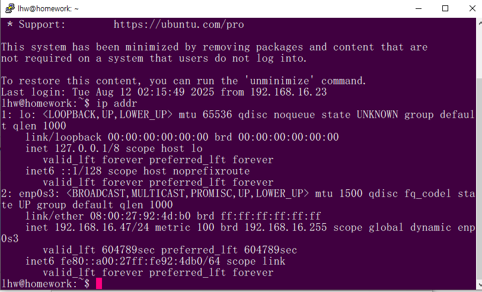

FireFox3 -> ASAv inside http 접속

포트폴리오 페이지입니다.
네트워크 보안관련 프로젝트 포트폴리오 제작소

FireFox3 -> ASAv inside http 접속
FireFox3 -> ASAv inside telnet 접속

Webterm2 -> ASAv dmz telnet 접속
PC1 -> Webterm1 Ping 접속

Webterm1 -> R1 http 접속
Webterm1 -> R1 telnet 접속

Webterm2 -> PC1 Ping 가능

R3 - Standby, R4 - Active 로 구축

기본 OSSEC Server로 사용한 Ubuntu IP
_ipaddr.PNG)
윈도우, Rocky Agent로 연결
윈도우 OSSEC 연결

Rocky 로 Zabbix Server 구축

윈도우, Rocky Agent로 연결

Pfsense로 오픈 VPN 구축

기본 Snort 구축한 우분투 IP, 적은 rules

Snort Rule 1. Window -> OSSEC http, ping탐지

Snort Rule 2. Rocky -> Window ping 탐지

Snort Rule 3. Kali -> Window Rand Source Attack DDoS 탐지

Snort Rule 4. Kali -> Rocky SYN Flag Scanning 탐지


Snort Rule 5. Window -> Rocky Command URL 탐지
HIDS 에서 웹접속을 해보려 했는데 방법을 찾지 못했습니다..

기본 Suricata 구축한 Rocky IP, Rules

Suricata Rules 1. Window -> OSSEC ubuntu http, ping 탐지

Suricata Rules 4. Kali -> Rocky SYN Flag Scanning 탐지

Suricata Rules 5. Window -> Rocky Command 탐지